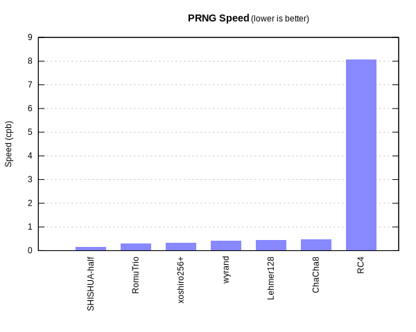
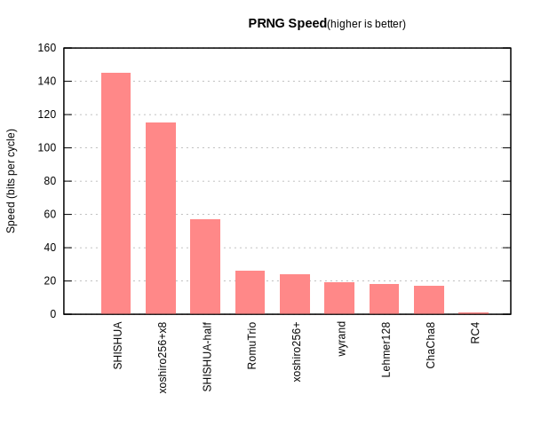

SHISHUA: The Fastest Pseudo-Random Generator In the World §
(TLDR: see the benchmark and the code.)
Six months ago, I wanted to make the best PRNG with an unconventional design,
whatever that design may be.
I expected it to start easy, and slowly get harder;
I wondered whether I would learn fast enough to pass the highest bar.
Surprisingly, difficulty did not increase linearly.
Passing the bytewise Chi-Squared tests was very hard!
Then, when I got the concepts, passing dieharder was also very hard.
When I got to that point, I was honestly so extatic,
that I published what I got to learn what the next challenge needed to be.
But it turned out it failed PractRand.
Then, passing BigCrush was very hard.
Then, passing 32 tebibytes of PractRand was very hard.
But once I reached that point, I realized that speed was going to be an issue.
It wasn’t just about having a construction that emitted ten megabytes a second, taking a month to pass PractRand.
But I have to admit, passing PractRand at a gigabyte a second was very hard.
Once you get there… what you really want to see is whether you can reach the Pareto frontier.
You want the fastest PRNG in the world that beats the hardest statistical tests.
I got there.
In the previous entry to the series, I explained all the things I learnt to reach it.
Here, I’ll detail how the winning design works.
Target §
Let’s start with the obvious: speed is platform-dependent.
I focused my optimization on the modern x86-64 architecture (so, Intel and AMD chips).
The classic metric used to compare performance there is cpb:
the number of CPU cycles spent to generate a byte of output.
All cryptographic papers compute and compare that metric.
A slightly lower cpb, in software or hardware, can weigh in the balance
just enough to make a primitive win a competition,
or become widely used by the major websites of the world.
To improve your cpb, you can do three things:
- Generate more bytes for the same amount of work, or
- Do less work to generate the same amount of bytes, or
- Parallelize work.
We will do all of the above.
Therefore, to boot with point 1, we need to output more bits on each iteration.
I am worried that people might say,
“this is not a PRNG unless it outputs 32-bit numbers,” or “64-bit numbers”.
Or more generally, “PRNGs must only rely on this subset of x86-64”;
as if some instructions, such as POPCNT, or some registers, such as %xmm7, are off-limits.
But PRNGs are engineering: they try to make the best of the CPU, decade after decade!
They relied on ROL when it came, and on %rax when 64-bit CPUs landed.
Sure, it means that this algorithm might be slower on ARM (although that remains to be seen);
but 64-bit PRNGs were heavily used before 2019’s Android switch to a required 64-bit support!
So things evolve with the hardware.
And today, Intel and AMD CPUs support 256-bit operations through AVX2.
Just like RC4 outputs 1 byte, and drand48 can only output 4 at a time;
just like pcg64 can only output 8 at a time;
we will output 32 bytes at a time.
Obviously, while 8 bytes could be output as a 64-bit number,
which most programming languages have a built-in type for,
few have a type for 16 bytes (C’s __uint128_t being a notable exception);
fewer yet have one for 32 bytes (aside from intrinsics).
So we must say goodbye to the typical PRNG function prototype
(here taken from Vigna’s HWD benchmark program):
static uint64_t next(void);
Instead, we can have the generator take a buffer to fill
(here taken from my own benchmark program):
void prng_gen(prng_state *s, __uint64_t buf[], __uint64_t size);
Are there disadvantages?
Well, if your generator outputs 32 bytes at a time,
you need the consumer to give an array that is a multiple of 32 bytes;
ideally, an array aligned to 32 bytes.
Although, with a tiny bit more work, you don’t.
Just fill a buffer. Output from it what has not been consumed;
refill it as needed.
That does make latency unpredictable: some calls will only read the buffer.
But it averages out the same.
So now we generate more bytes for the same amount of work.
Next step: how do we parallelize work?
Parallelism §
The CPU offers an incredible wealth of parallelism at every level.
First, of course, are the SIMD instructions (Single-Instruction, Multiple Data).
For instance, AVX2 does four 64-bit additions in parallel, or eight 32-bit ones, etc.
In cryptography, it has been severely relied upon for fifteen years.
Notably, ChaCha20 gains an incredible amount of speed from it;
most important primitives that don’t use AESNI rely on that.
For instance, NORX and Gimli are designed with that in mind.
Recently, there has been increasing interest in the non-cryptographic PRNG community.
In particular, existing primitives not designed for SIMD can be the basis
for building a very fast PRNG.
For instance, Sebastiano Vigna, while pushing for his xoshiro256++ design
in the Julia programming language’s standard library,
learnt that concatenating the output of eight concurrent instances of the PRNG
initialized differently, was made very fast by having each operation of the design
performed simultaneously on each PRNG.
SIMD is one level of CPU parallelism, but not the only one.
I encourage you to read the previous article on the subject
to get a better picture, but I’ll mention what I relied upon.
CPU pipelining processes multiple instructions at different stages of processing.
When well-ordered to limit interstage dependencies, instructions can be processed faster.
Superscalar execution makes the computation part of instruction happen in parallel.
But they must have no read/write dependencies to do so.
We can fit the design to reduce the risk of stalls,
by making the write part happen long before the read.
Out-of-order execution lets the processor execute instructions that happen later,
even though a previous instruction is not yet done, if the later instruction has no
read/write dependency to it.
All right, let’s dig our hands into the implementation!
Design §
Let’s walk through the design of something we will call SHISHUA-half,
for reasons that will slowly become obvious along the article.
It looks like this:
Let’s dive in line by line.
typedef struct prng_state {
__m256i state[2];
__m256i output;
__m256i counter;
} prng_state;
Our state is cut in two pieces that both fit in an AVX2 register (256 bits).
We keep output around in the state to get a bit of speed,
but it is not actually part of the state.
We also have a 64-bit counter; it is also an AVX2 register to ease computation.
Indeed, AVX2 has a bit of a quirk where regular registers (%rax and the like)
cannot directly be transfered to the SIMD ones with a MOV;
it must go through RAM (typically the stack), which costs both latency and
two CPU instructions (MOV to the stack, VMOV from the stack).
We’re now going to look at generation.
We start by loading everything, then we loop over the buffer,
filling it up by 32 bytes at each iteration.
inline void prng_gen(prng_state *s, __uint64_t buf[], __uint64_t size) {
__m256i s0 = s->state[0], counter = s->counter,
s1 = s->state[1], o = s->output;
for (__uint64_t i = 0; i < size; i += 4) {
_mm256_storeu_si256((__m256i*)&buf[i], o);
}
s->state[0] = s0; s->counter = counter;
s->state[1] = s1; s->output = o;
}
Since the function is inlined, the buffer being immediately filled at the start
lets the CPU execute the instructions that depend on it in the calling function right away,
through out-of-order execution.
Inside the loop, we perform three operations on the state in rapid succession:
- SHIft
- SHUffle
- Add
Hence the name, SHISHUA!
First, the shift §
u0 = _mm256_srli_epi64(s0, 1); u1 = _mm256_srli_epi64(s1, 3);
AVX2 does not support rotations, sadly.
But I want to entangle bits from one position in the 64-bit numbers,
to other bit positions! And shift is the next best thing for that.
We must shift by an odd number so that each bit reaches all 64-bit positions,
and not just half.
Shift loses bits, which removes information from our state.
That is bad, so we minimize the loss: the smallest odd numbers are 1 and 3.
We use different shift values to increase divergence between the two sides,
which should help lower the similarity of their self-correlation.
We use rightward shift because the rightmost bits have the least diffusion in addition:
the low bit of A+B is just a XOR of the low bits of A and B, for instance.
Second, the shuffle §
t0 = _mm256_permutevar8x32_epi32(s0, shu0); t1 = _mm256_permutevar8x32_epi32(s1, shu1);
We use a 32-bit shuffle because it is the only one that is both a different granularity
than the 64-bit operations that we do everywhere else (which breaks 64-bit alignment),
and that can also cross lanes
(other shuffles can only move bits within the left 128 bits if they started on the left,
or within the right 128 bits if they started on the right).
Here are the shuffle constants:
__m256i shu0 = _mm256_set_epi32(4, 3, 2, 1, 0, 7, 6, 5),
shu1 = _mm256_set_epi32(2, 1, 0, 7, 6, 5, 4, 3);
To make the shuffle really strenghten the output, we move weak (low-diffusion) 32-bit parts
of the 64-bit additions to strong positions, so that the next addition will enrich it.
The low 32-bit part of a 64-bit chunk never moves to the same 64-bit chunk as its high part.
That way, they do not remain in the same chunk, encouraging mixing between chunks.
Each 32-bit part eventually reaches all positions circularly: A to B, B to C, … H to A.
You might notice that the simplest shuffle that follows all those requirements
are simply those two 256-bit rotations (rotation by 96 bits and 160 bits rightward, respectively).
Third, the addition §
Let’s add 64-bit chunks from the two temporary variables,
the shift one and the shuffle one, together.
s0 = _mm256_add_epi64(t0, u0); s1 = _mm256_add_epi64(t1, u1);
The addition is the main source of diffusion: it combines bits
into irreducible combinations of XOR and AND expressions across 64-bit positions.
Storing the result of the addition in the state keeps that diffusion permanently.
Output function §
So, where do we get the output from?
Easy: the structure we built is laid out in such a way that
we are growing two independent pieces of state: s0 and s1,
which never influence each other.
So, we XOR them, and get something very random.
In fact, to increase the independence between the inputs that we XOR,
we take the partial results instead: the shifted piece of one state,
and the shuffled piece of the other.
o = _mm256_xor_si256(u0, t1);
That also has the effect of reducing the read/write dependencies between superscalar CPU instructions,
as u0 and t1 are ready to be read before s0 and s1 are.
You may have noticed that we did not talk about the counter yet.
It turns out we handle it at the start of the loop.
We first change the state, and then increment the counter:
s1 = _mm256_add_epi64(s1, counter);
counter = _mm256_add_epi64(counter, increment);
The reason we change the state first, and then update the counter,
is so that s1 becomes available sooner,
reducing the risk that later instructions that will read it get stalled
in the CPU pipeline.
It also avoids a direct read/write dependency on the counter.
The reason we apply the counter to s1 and not s0,
is that both affect the output anyway.
However, s1 loses more bits from the shift,
so this helps it get back on its feet after that harmful shearing.
The counter is not necessary to beat PractRand.
Its only purpose is to set a lower bound of 269 bytes = 512 EiB
to the period of the PRNG:
we only start repeating the cycle after one millenia at 10 GiB/s,
which is unlikely to ever be too low for practical applications in the coming centuries.
Thanks to this, there are no bad seeds.
Here are the increments:
__m256i increment = _mm256_set_epi64x(1, 3, 5, 7);
The increments are picked as odd numbers,
since only coprimes of the base cover the full cycle of the finite field GF(264),
and all odd numbers are coprime of 2.
(In other words, if you increment by an even number between integers 0 to 4,
wrapping around to 0 when you go past 4,
you get the sequence 0-2-0-2-…, which never outputs 1 or 3;
but an odd increment goes through all integers.)
We use a different odd number of each 64-bit number in the state,
which makes them diverge more, and adds a tiny bit of stirring.
I picked the smallest odd numbers so that they don’t look like magic numbers.
So, there we go! That is how the state transition and output function work.
Now, how do we initialize them?
Initialization §
We initialize the state with the hex digits of Φ,
the irrational number that is least approximable by a fraction.
static __uint64_t phi[8] = {
0x9E3779B97F4A7C15, 0xF39CC0605CEDC834, 0x1082276BF3A27251, 0xF86C6A11D0C18E95,
0x2767F0B153D27B7F, 0x0347045B5BF1827F, 0x01886F0928403002, 0xC1D64BA40F335E36,
};
We take a 256-bit seed, which is common in cryptography,
and doesn’t really hurt in non-cryptographic PRNGs:
prng_state prng_init(SEEDTYPE seed[4]) {
prng_state s;
return s;
}
We don’t want to override a whole piece of state (s0 nor s1) with the seed;
we only want to affect half.
That way, we avoid having debilitating seeds that,
purposefully or accidentally, set the state to a known weak start.
With half of each state intact, they still keep control over 128 bits of state,
which is enough entropy to start and stay strong.
s.state[0] = _mm256_set_epi64x(phi[3], phi[2] ^ seed[1], phi[1], phi[0] ^ seed[0]);
s.state[1] = _mm256_set_epi64x(phi[7], phi[6] ^ seed[3], phi[5], phi[4] ^ seed[2]);
Then we do the following thing a ROUNDS number of times:
- Run
STEPS iterations of SHISHUA,
- Set one piece of the state to the other, and the other to the output.
for (char i = 0; i < ROUNDS; i++) {
prng_gen(&s, buf, 4 * STEPS);
s.state[0] = s.state[1];
s.state[1] = s.output;
}
Setting to the output increases the diffusion of the state.
In the initialization, the added work and state correlation don’t matter,
since this is only done a few times, once.
You only care about diffusion in initialization.
I picked values of 5 for STEPS and 4 for ROUNDS
after looking at how much they impacted seed correlation.
(I computed seed correlation by counting the “unusual” and “suspicious” anomalies
coming out of the PractRand PRNG quality tool.)
Speed measurement benchmarks are tricky for so many reasons.
- Clock measurements can lack precision.
- The CPU has so much parallelism, that tracking when instructions start and end,
is both nondeterministic and heavily dependent on other events on the CPU.
- Obviously, from one CPU vendor to the next, the resuts will be different.
That is also true from one CPU series to the next from the same vendor.
- CPUs nowadays have variable frequency: they get purposefully slower or faster
depending on the need for low power consumption or the risk of high temperature.
I use a dedicated CPU instruction, RDTSC, which computes the number of cycles.
To make sure that everyone can reproduce my results, I use a cloud virtual machine.
It doesn’t change the order of the benchmark results compared to a local test;
it also avoids requesting that other people buy the same computer as the one I have.
Finally, there are many use-cases where PRNGs would be used in the cloud on those instances.
I chose Google Cloud Platform’s N2 (Intel chip) and N2D (AMD chip).
The advantage of GCP is that they have chips from both vendors.
We’ll focus on Intel here, but the orders of magnitude are similar for AMD.
To give a bit of context, let’s first look at an old cryptographic generator, RC4.
Impossible to parallelize; I got 7.5 cpb (cycles spent per generated byte).
Now, let’s look at a very common and fast MCG: Lehmer128,
the simplest PRNG that passes BigCrush: 0.44 cpb. Wow, not bad!
For kicks, let’s make another detour through modern cryptographic designs.
They rely on a lot of the tricks that we saw.
Take ChaCha8 for instance.
It reaches… 0.46 cpb! About the same as the really fast one we just saw!
SIMD really works its magic!
To the cryptographic community, this is not a complete surprise.
ChaCha8 is just insanely easy to parallelize.
It is just a counter in a diffused state, well-hashed.
Next, a recent mixer that is the basis for fast hash tables: wyrand.
0.41 cpb, slightly better!
Among Vigna’s fast PRNG, some don’t pass 32 TiB of PractRand, but are very fast.
Xoshiro256+ fails at 512 MiB but is among the fastest of the bunch: 0.34 cpb.
Let’s look at a recent entry, from earlier this year: RomuTrio.
It claims the title of fastest PRNG in the world: 0.31 cpb.
Alright, enough. How does SHISHUA-half fare?
0.14 cpb. Twice as fast as RomuTrio.

Given its quality, it is unmatched.
But remember how the Julia team looked at
combining multiple instances of Vigna’s design
to make a fast SIMD PRNG?
Let’s look at Vigna’s fastest result using this technique:
Xoshiro256+ 8 times. 0.07 cpb!
(Technically, it varies on the machine;
on my laptop, SHISHUA-half is faster than this.)
Sure, the resulting meta-PRNG (which I dub Xoshiro256+x8)
has terrible statistical biases that fail many simple tests.
But, let’s beat its speed anyway, without betraying our high quality standards.
Now you probably guess why we called our earlier primitive SHISHUA-half.
It turns out getting twice as fast is easy by doubling SHISHUA-half.
Similar to the Julia insights, we have two PRNGs initialized differently
(four blocks of 256-bit state),
outputting their thing one after the other.
But with more state, we can output even more stuff,
by combining the four states pairwise:
o0 = _mm256_xor_si256(u0, t1);
o1 = _mm256_xor_si256(u2, t3);
o2 = _mm256_xor_si256(s0, s3);
o3 = _mm256_xor_si256(s2, s1);
And that is how you get SHISHUA, and its 0.06 cpb speed.
Five times faster than the previously-fastest in the world
that passes 32 TiB of PractRand.
You can barely see it in the graph, so I removed RC4.
I guess my point is that it is somewhat competitive.
(In fact, it is even faster on my laptop, at 0.03 cpb,
but I want to stick to my benchmark promises.
Maybe we lose a tiny bit of performance on early AVX-512 CPUs.)
Hopefully, SHISHUA stays the fastest in the world for at least a few weeks?
(Please make it so.)
Quality §
It passes BigCrush and 32 TiB of PractRand without suspicion.
In fact, all of its four outputs do.
One of the not-ideal aspects of the design is that SHISHUA is not reversible.
You can see this with a reduction to a four-bit state, with s0 = [a, b] and s1 = [c, d].
The shift will yield [0, a] and [0, d]; the shuffle will give [b, c] and [d, a].
The new s0 is [b, c] + [0, a] = [b⊕(a∧c), a⊕c], and s1 is [d, a] + [0, c] = [d⊕(a∧c), a⊕c].
If a = ¬c, then a⊕c = 1 and a∧c = 0, thus s0 = [b, 1] and s1 = [d, 1].
So there are two combinations of a and c that give the same final state.
It is not an issue in our case, because the 64-bit counter is also part of the state.
So you have a minimum cycle of 2⁷¹ bytes (128 bytes per state transition),
which lasts seven millenia at 10 GiB/s.
So that counterbalances the lost states.
Besides, even despite the irreversibility,
the average state transition period is 2^((256+1)÷2).
That gives an average cycle of 2¹³⁵ bytes
(more than a trillion times the age of the universe to reach at 10 GiB/s).
Although, in my opinion, average cycles are overrated,
as they give no indication on the quality of the output.
Alright, here is the distilled benchmark:
| Name | Performance | Quality | Seed correlation
|
|---|
| SHISHUA | 0.06 | >32 TiB | >32 TiB
|
| xoshiro256+x8 | 0.07 | 1 KiB | 0 KiB
|
| RomuTrio | 0.31 | >32 TiB | 1 KiB
|
| xoshiro256+ | 0.34 | 512 MiB | 1 KiB
|
| wyrand | 0.41 | >32 TiB | 32 KiB
|
| Lehmer128 | 0.44 | >32 TiB | 1 KiB
|
| ChaCha8 | 0.46 | >32 TiB? | >32 TiB?
|
| RC4 | 8.06 | 1 TiB | 1 KiB
|
- Performance: in number of CPU cycles spent per byte generated,
on N2 GCP instances. On N2D (AMD), the order is the same.
- Quality: level at which it fails PractRand. We show a
> if it did not fail.
We put a question mark if we have not proved it.
- Seed correlation: PractRand on interleaving of bytes from eight streams
with seeds 1, 2, 4, 8, 16, 32, 64, 128.
We use PractRand with folding 2 and expanded tests.
Speed measurement is traditionally in cpb.
Given the speed we get to nowadays,
a more appropriate measurement is in number of bits generated per CPU cycle.
Not only do I find it easier to grasp,
it is also much easier to compare huge differences on the graph:

Next §
While there are no practical issue with irreversibility in our case,
it also means that we can improve on SHISHUA.
My ideal PRNG would have the following properties:
- The state transition is a circular permutation, giving a way-more-than-enough 2¹⁰²⁴ bytes cycle.
As in, it would take more than 10²⁸² times the age of the universe to reach the end at 10 GiB/s,
instead of SHISHUA’s seven millenia.
It is not exactly “better” (impossible is impossible);
but if we can reduce the design to a smaller state without affecting diffusion,
we might be able to get a faster PRNG.
Do you think we might be able to fit one in ARM’s 128-bit NEON registers?
Also, we would no longer need the counter, removing two additions.
- The output function is provably irreversible.
The way SHISHUA XORs two independent numbers already has that property,
but I haven’t proved that the numbers are truly decorrelated.
- The state initialization is irreversible
with each state having 2¹²⁸ possible seeds (to prevent guessing the seed).
The way SHISHUA sets the state to its own output is likely irreversible.
After all, it uses SHISHUA’s state transition (partially irreversible)
and its output function (seemingly irreversible, see point 2).
- The state initialization has perfect diffusion:
all seed bits affect all state bits with equal probability.
I’d like to compute that for SHISHUA.
One issue holding back PRNGs and cryptography overall is the lack of better, general-purpose tooling.
I want a tool that can instantly give me an accurate score,
allowing me to compare designs on the spot.
PractRand is great compared to what came before it; but:
- It cannot rate high-quality generators, making comparisons between them impossible.
We just get to say “well, they both had no anomalies after 32 TiB…”
- It takes weeks to run…
I believe great improvements are coming.
Discussions on
Reddit
and
Hacker News
.